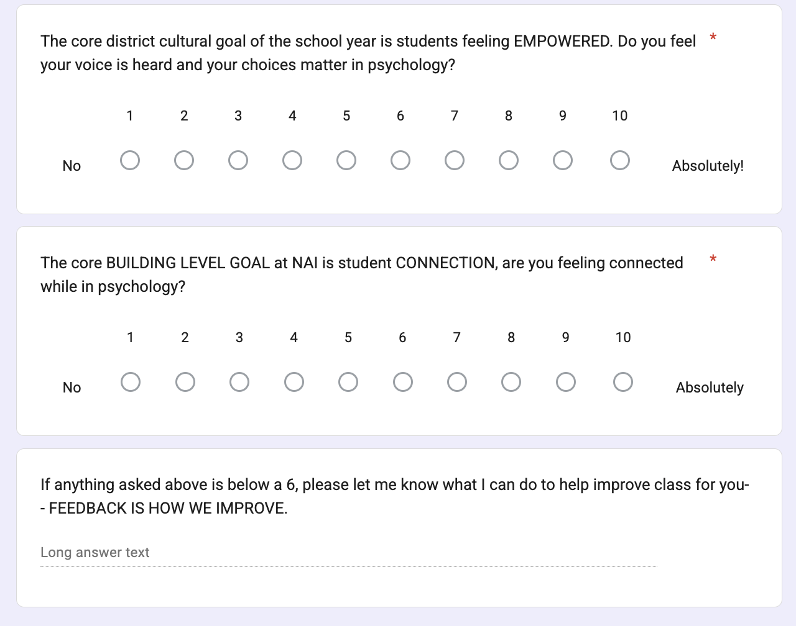
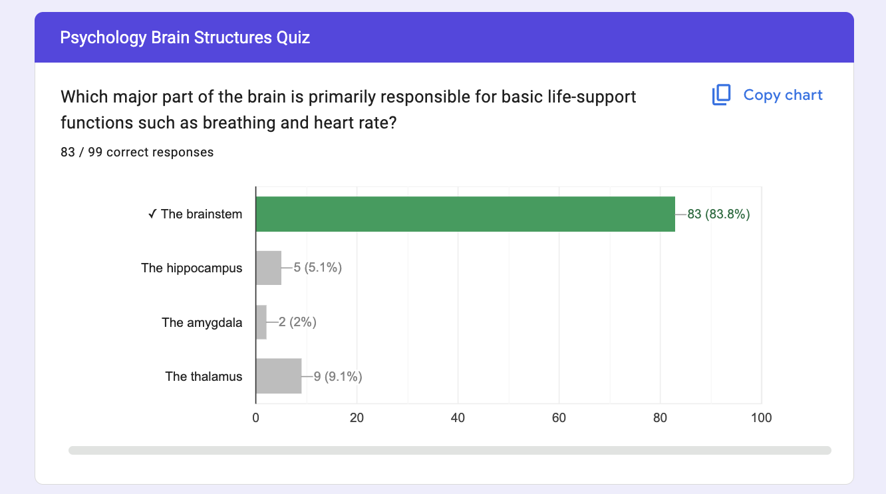
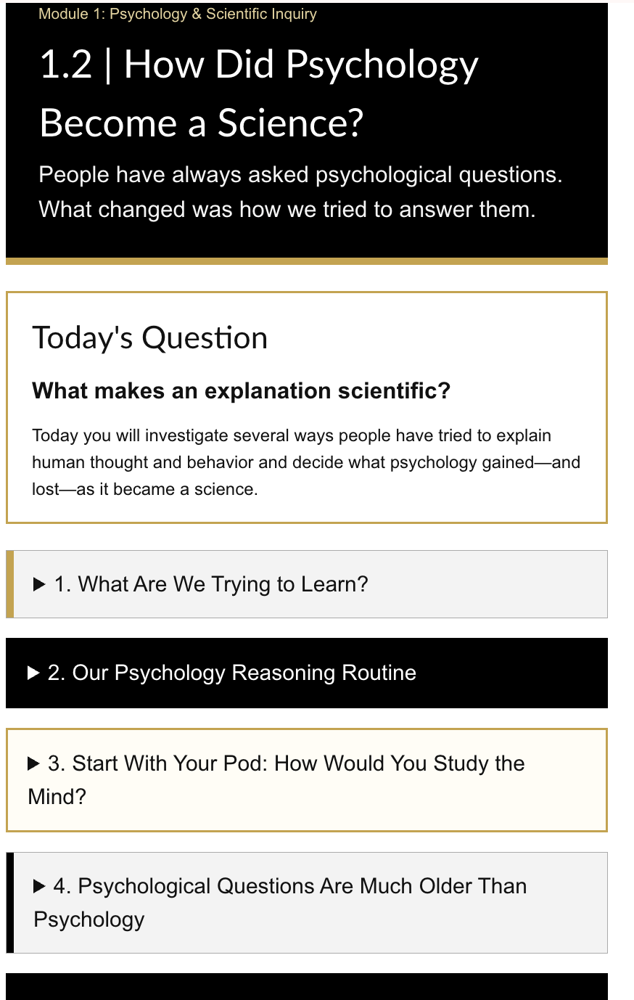
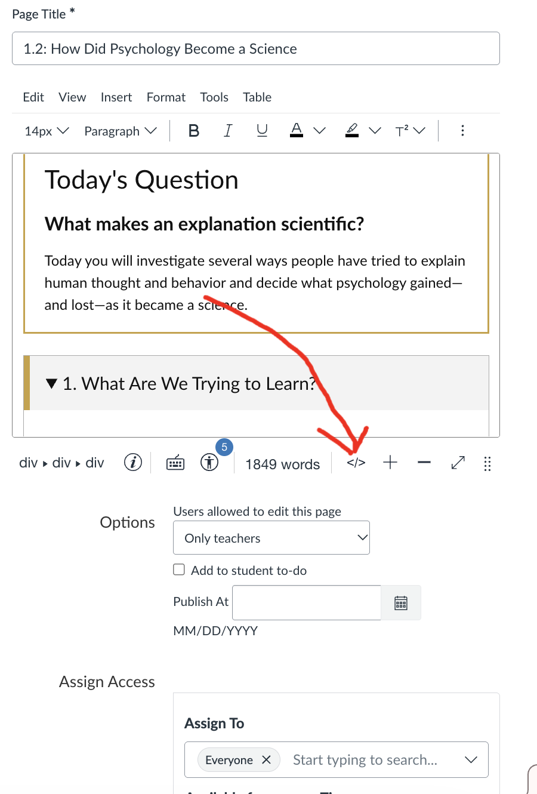
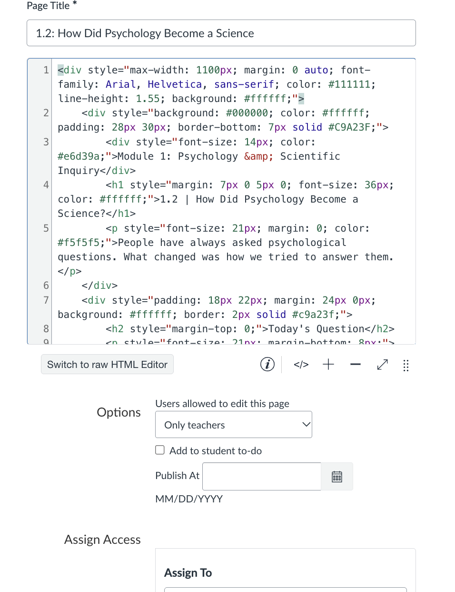
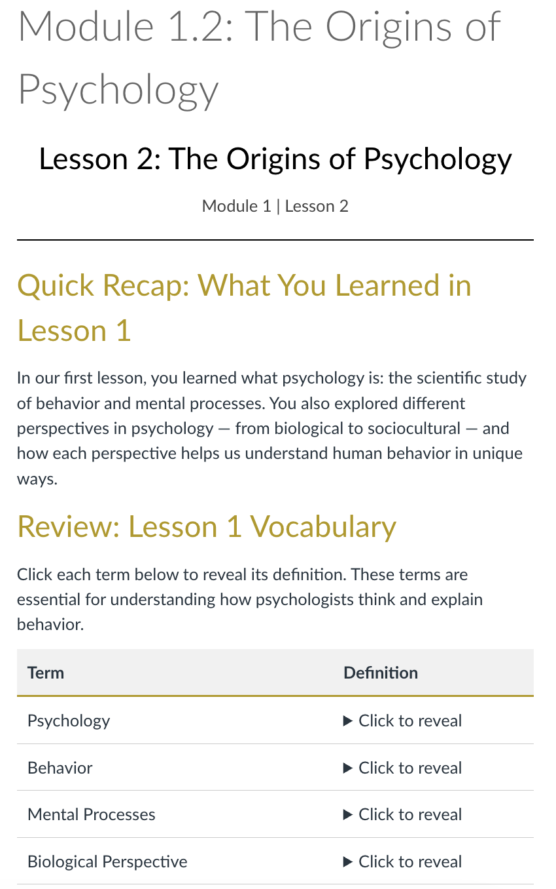

Build a Student Feedback Loop
Start with what you want to know about your students' experience and learning. Build questions in a format you already know.
Leave withA short feedback form or ready-to-use question set.
This is never technology for technology’s sake. It is about using the tools already available to strengthen the fundamentals: clear goals, strong instruction, formative assessment, student feedback, responsive teaching, and opportunities to improve.
Good teaching still depends on knowing what we want students to learn, creating strong learning experiences, checking what students are actually learning and experiencing, and responding to the evidence.
The workshop uses Plan → Do → Study → Act as its organizing framework. The point is not to add a new initiative. It is to make an existing habit of good teaching more visible and easier to act on.
Canvas, AI, Apple tools, Newline boards, and New Quizzes can reduce the time between noticing a need and putting the next useful version in front of students.
The tools support the cycle. They do not replace it.
The four-part cycle is the framework behind the work. The planning happens inside each pathway, so you do not need a separate PLAN station.
What do we want students to learn and experience?
Clarify learning, culture, capacity, independence, support, engagement, and the evidence that would help us know how things are going.
Build it and put it in front of students.
Canvas, paper, AI-assisted production, QTI 2.1, alternate quiz versions, classroom technology, and the actual teaching experience.
What are students telling and showing us?
Friday Forms, ungraded formative evidence, student work, quiz results, comments, observation, and cultural feedback.
What do we carry into the next version?
Keep what is working, re-embed what needs another pass, change a delivery decision, revise a page or packet, create another mastery opportunity, close the loop with students, and begin the next cycle.
You will see this cycle throughout the workshop. PLAN is built into every pathway: what are you trying to do, what do you already have, and what evidence will matter? Then you build, study what happens, respond, and collect new evidence.
Clarify what you want students to learn or experience and what would help you know how it is going.
Create or organize the material students will actually use.
Collect learning evidence and student experience feedback.
Keep, tailor, re-embed, revise, reassess, or ask another question.
Friday Forms and other checks can combine student experience evidence with ungraded formative learning evidence. Both help us stay accountable to the classroom culture and learning standards we intended.
Canvas, AI, classroom tools, and New Quizzes can make it faster to build, respond, and put the next useful version in front of students. The tools do not replace the cycle.
Start with what you want to know about your students' experience and learning. Build questions in a format you already know.
Use responses, ungraded formative results, student work, or observations to decide what you want to know more about.
Tell students what you heard, what you decided to try, and when you will ask again.
Get existing lesson content into Canvas Pages/Modules, or get an existing quiz into Canvas New Quizzes.
Decide what you want students to access digitally and what is worth keeping on paper.
Use your own content. Let Chat help with the backside HTML and page structure without replacing your material.
Choose your own starting point: open a district-provided AI tool, learn a practical prompting structure, or skip directly to refining a real product.
Change the format, not the ownership. Turn existing slides, readings, notes, or activities into another useful form.
Carry a need forward into the next lesson, packet, case, teacher stop, or retrieval opportunity instead of starting over.
Use questions you already have to create an import-ready QTI 2.1 package for Canvas New Quizzes, including additional versions when another mastery opportunity is useful.
Use a Canvas export or larger set of course materials so Chat can work with sequence, terminology, and prior learning.
Plan how you want to use the material across whole-class, pod, small-group, individual, or mobile instruction.
Look at how page format, paper materials, teacher stops, displays, and available devices support the way you want to teach.
Plan what students will experience, what you will watch for, and how you will know what to carry forward next.
These examples are here to make the process visible. They are not a template teachers are expected to copy.





Bring your own content. Ask Chat to format the backside HTML. Switch Canvas into HTML mode, paste, save, review, and revise.
The Psychology inquiry guide is one example of dividing the work across two surfaces. Canvas carries sequence and resources. The paper guide carries stops, notes, evidence, and reasoning.
Open the packet
Getting material into Canvas can be useful on its own. Later versions may change as the course, materials, and classroom use change.